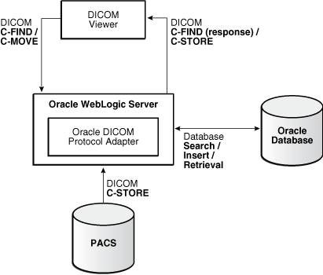
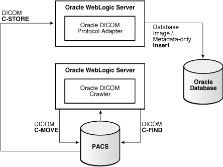
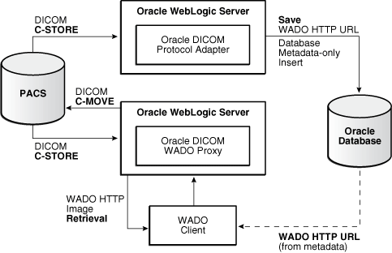

4 DICOM Protocol Support
This chapter describes the Oracle Multimedia DICOM support for the DICOM protocol.
This chapter includes these sections:
The following table contains links to additional information about the DICOM protocol located in other parts of this guide.
Table 4-1 Roadmap for More DICOM Protocol Documentation in This Guide
| For: | See: |
|---|---|
|
An overview of the DICOM protocol support for Oracle Database |
DICOM Database Network Component for the DICOM Protocol Adapter |
|
Information about the characteristics of DICOM protocol documents |
|
|
How to information about creating a DICOM protocol document |
|
|
How to information about inserting a DICOM protocol document into the DICOM data model repository |
|
|
An example of inserting a DICOM protocol document into the DICOM repository |
|
|
Information about the DICOM XML schema for DICOM protocol documents |
For information about the DICOM conformance statement for the Oracle DICOM protocol adapter suite, see Oracle Multimedia on the Oracle Technology Network Web site.
Note:
This chapter assumes that you are familiar with the process for deploying applications on WebLogic Server.
See Oracle Fusion Middleware Deploying Applications to Oracle WebLogic Server in the Oracle Fusion Middleware Online Documentation Library for complete documentation about application deployment on the WebLogic Application Server.
4.1 Overview of DICOM Protocol Support for Oracle Database
The DICOM standard specifies both an imaging file format and a networking protocol to be used in the medical imaging domain. Picture Archiving and Communication Systems (PACS) are designed to store and transfer medical images in the DICOM format using the DICOM network protocol. Medical imaging devices, such as CT scanners and MR machines, communicate with one or more PACS to store images. Health care professionals then review images using DICOM viewer applications that query PACS to retrieve relevant patient information and images.
In previous versions, Oracle Multimedia DICOM supported only the imaging file format. Beginning with Oracle Database 12c Release 1 (12.1), Oracle Multimedia DICOM added support for the DICOM networking protocol. This support allows Oracle Database to retrieve and manage images originally stored in PACS. It also allows DICOM viewers to view images stored and managed by Oracle Database.
DICOM protocol support enables users to import DICOM images into Oracle Database from PACS, query DICOM images stored in Oracle Database through DICOM viewers, retrieve DICOM images from Oracle Database to PACS, extract metadata associated with images, and generate preview images associated with the original DICOM images. The DICOM images, metadata, and preview images can be stored and managed in Oracle Database.
4.2 Contents of the Oracle DICOM Protocol Adapter Suite
The DICOM protocol adapter suite includes three Oracle WebLogic applications that are available as adapters to communicate with PACS, viewers, and other DICOM clients. The WebLogic applications interact with Oracle Database to perform operations based on the communications with the DICOM clients to store, query, and retrieve images from Oracle Database.
These applications run in the middle tier on the WebLogic Application Server. You can choose to deploy all or only selected components of the DICOM protocol adapter suite on WebLogic Server.
Table 4-2 lists and briefly describes these application components:
Table 4-2 Components in the DICOM Protocol Adapter Suite
These subsections describe the components in this suite in more detail:
4.2.1 The Oracle DICOM Protocol Adapter
The DICOM protocol adapter is deployed as a ResourceAdapter in Oracle WebLogic Server. The adapter supports these DICOM protocol roles:
-
C-ECHO SCP
-
C-FIND SCP
-
C-MOVE SCP
-
C-STORE SCP
-
C-STORE SCU
Figure 4-1 shows how the DICOM protocol adapter interacts with other DICOM clients, such as DICOM viewers and PACS, as well as with Oracle Database.
Figure 4-1 DICOM Protocol Adapter Interacting with Other Components
Description of "Figure 4-1 DICOM Protocol Adapter Interacting with Other Components"
Specifically, Figure 4-1 shows how a PACS might push an image to the DICOM protocol adapter for insertion into Oracle Database. And, it shows how a DICOM viewer might attempt to query and retrieve DICOM images from Oracle Database by way of the DICOM protocol adapter.
DICOM Network Protocol Message Handling
The DICOM protocol adapter supports a set of message handling operations of the DICOM network protocol (as specified in the DICOM standard). Table 4-3 describes the DICOM commands that DICOM clients can issue to the DICOM protocol adapter to query and retrieve DICOM image content stored in Oracle Database.
Table 4-3 DICOM Protocol Adapter Message Handling Commands
| DICOM Command | Description |
|---|---|
|
|
Determines connectivity between the DICOM protocol adapter and a DICOM client. When the adapter receives a |
|
|
Queries the DICOM protocol adapter to retrieve from the database images that match the specified metadata attributes (wildcards are supported) defined in the |
|
|
Transfers an image to the DICOM protocol adapter. When the adapter receives a |
|
|
Queries the DICOM protocol adapter to retrieve image metadata that matches the specified query. Wildcards are supported in the queries. |
4.2.2 The Oracle DICOM Crawler
The DICOM crawler is a scheduled service of the DICOM protocol adapter suite that periodically queries a set of PACS using the DICOM protocol to import new DICOM images or DICOM metadata into Oracle Database. It is deployed as a ResourceAdapter application in Oracle WebLogic Server.
Users can configure the DICOM crawler to periodically issue DICOM C-FIND requests to a PACS to identify DICOM images of interest according to user-specified search criteria. When the DICOM crawler identifies such images, it issues a C-MOVE request to the PACS to transfer these images to the DICOM protocol adapter. Then, the adapter checks in the images or the image metadata to Oracle Database.
Figure 4-2 shows how messages are exchanged between the DICOM crawler, PACS, and the DICOM protocol adapter.
Figure 4-2 DICOM Crawler Exchanging Messages with Other Components
Description of "Figure 4-2 DICOM Crawler Exchanging Messages with Other Components"
4.2.3 The Oracle DICOM WADO Proxy
The DICOM WADO proxy is a service that retrieves DICOM images through a WADO-formatted URL when the image metadata is in Oracle Database and the images are in the PACS.
The WADO proxy is deployed as a JAX-RS Servlet application in Oracle WebLogic Server. The proxy listens for HTTP GET requests that correspond to the retrieval of a specific DICOM image from a specific PACS. Both the Application Entity (AE) title of the PACS and the unique SOP instance UID of the image are encoded as part of the WADO URL.
When the proxy receives a WADO request like this, it issues a C-MOVE request to the corresponding PACS to retrieve the image. After the proxy receives the C-STORE request from the PACS with the DICOM image data corresponding to the C-MOVE it issued, the proxy passes the DICOM image data to the HTTP client that issued the WADO request.
Figure 4-3 shows how the set of messages required to process a WADO request from a WADO client is exchanged between the various components. It also shows how this type of WADO URL is generated at insertion time for a DICOM image originating from a PACS.
Figure 4-3 DICOM WADO Proxy Retrieving DICOM Images
Description of "Figure 4-3 DICOM WADO Proxy Retrieving DICOM Images"
4.3 Deploying the Oracle DICOM Protocol Adapter Suite
This section describes how to install and deploy the DICOM protocol adapter suite. Before attempting these steps, ensure that Oracle WebLogic Server is installed and running.
You can find the files that are described in these steps in this directory:
<ORACLE_HOME>/ord/jlib
The complete process includes these steps:
- Install and deploy the
OrdDicomLibrary.eararchive file, which contains the Java classes and Java libraries required to run the Oracle DICOM protocol adapter suite (see Deploying the Archive Files). - Configure the
OrdDicomLibrary.eararchive file for a standard or advanced deployment to choose individual components for installation (see Performing a Standard Deployment or Performing an Advanced Deployment). - Install and deploy the
OrdDicomAdapter.eararchive file, which contains the files for each component in the Oracle DICOM protocol adapter suite.
This section includes these subsections:
4.3.1 Deploying the Archive Files
The Oracle DICOM protocol adapter is distributed as two WebLogic enterprise archive files, as follows:
-
OrdDicomLibrary.earThis archive contains all the Java classes and other Java libraries required to run the adapter.
-
OrdDicomAdapter.earThis archive references the
OrdDicomLibrary.eararchive file, and contains the XML descriptors and configuration files that are necessary to provide a bare-bones deployment configuration for the three components of the Oracle DICOM protocol adapter.
To deploy the OrdDicomLibrary.ear archive to WebLogic Server, use the weblogic.Deployer tool by issuing a command similar to this one:
java weblogic.Deployer -upload -name OrdDICOM -source OrdDicomLibrary.ear -targets [target_name] -adminurl [weblogic_admin_url] -user [weblogic_user] -deploy -library
To deploy the individual components of the Oracle DICOM protocol adapter suite, extract the contents of the OrdDicomAdapter.ear archive using the Java jar tool. Then modify the XML configuration files before deploying, as described in Configuring the Oracle DICOM Protocol Adapter, Configuring the Oracle DICOM Crawler, and Configuring the Oracle DICOM WADO Proxy.
If the archive is extracted to a directory named oracle-dicom, the file structure of the directory appears as follows:
oracle-dicom/META-INF/MANIFEST.MF oracle-dicom/META-INF/application.xml oracle-dicom/META-INF/weblogic-application.xml oracle-dicom/APP-INF/lib/dicom-net_adapter.jar oracle-dicom/APP-INF/lib/dicom-net_adapter.rar oracle-dicom/APP-INF/lib/dicom-net_crawler.jar oracle-dicom/APP-INF/lib/dicom-net_crawler.rar oracle-dicom/APP-INF/lib/dicom-net_wado.war oracle-dicom/APP-INF/classes/ordim_adapter_config.xml oracle-dicom/APP-INF/classes/ordim_crawler_config.xml oracle-dicom/APP-INF/classes/ordim_wado_config.xml
The XML files in the oracle-dicom/APP-INF/classes/ directory are the files used to configure the components of the Oracle DICOM protocol adapter suite.
The archive files in the oracle-dicom/APP-INF/lib/ directory correspond to the modules comprising the Oracle DICOM protocol adapter.
The XML files in the oracle-dicom/META-INF/ directory correspond to the WebLogic deployment descriptors describing all the modules and resources used in the application.
4.3.2 Performing a Standard Deployment
Note:
Before attempting to deploy the Oracle DICOM protocol adapter, first you must deploy the OrdDicomLibrary.ear library to WebLogic Server and configure the DICOM Protocol support for Oracle Database.
See Deploying the Archive Files and Configuring DICOM Protocol Support for Oracle Database for details.
To deploy a single instance of each component of the Oracle DICOM protocol adapter suite, edit the XML files in the oracle-dicom/APP-INF/classes/ directory.
After modifying the configuration files, as described in Configuring the Oracle DICOM Protocol Adapter, issue a command similar to this one to deploy the application to WebLogic Server:
java weblogic.Deployer -upload -name OracleDicomAdapterSuite -source 'oracle-dicom' -targets [weblogic_server] -adminurl [weblogic_admin_url] -user [weblogic_user] -deploy
This example assumes that you extracted the OrdDicomAdapter.ear archive to a directory named oracle-dicom.
This command deploys the three components of the Oracle DICOM protocol adapter suite to WebLogic Server, and then starts them.
4.3.3 Performing an Advanced Deployment
Although the components of the Oracle DICOM protocol adapter are bundled together in a single enterprise archive, you need not deploy all of them at the same time. For instance, you can deploy multiple instances of a particular component. Or, you can choose not to deploy a single instance of a particular component.
The META-INF/application.xml file describes the modules to be enabled at deployment time. Example 4-1 shows a sample of this XML file:
In Example 4-1, all three components of the Oracle DICOM protocol adapter suite are enabled. To disable any of these components, delete (or comment out) the module references that correspond to the component you want to remove.
Both the DICOM protocol adapter and the DICOM crawler components require at least two module definitions, as follows:
-
*.rarThis archive is the ResourceAdapter archive for the component (one is required for each component)
-
*.jarThis archive is the MessageDrivenBean (MDB) archive for the component (at least one is required for each component).
One module definition is required for each instance of the DICOM WADO proxy component (the *.war archive)
By default, an Oracle DICOM protocol adapter configuration file is created for each MDB archive and for the WADO proxy archive, as shown in the following list:
-
dicom-net_adapter.jarandordim_adapter_config.xml -
dicom-net_crawler.jarandordim_crawler_config.xml -
dicom-new_wado.warandordim_wado_config.xml
Follow these steps to deploy multiple instances of any of the three components of the Oracle DICOM protocol adapter suite:
- Create a copy of the appropriate MDB (
*.jar) archive or WADO (*.war) archive. - Modify the copy of the archive as described in Modifying the Component Archive Files.
- Place the modified archive with the original archive in the
APP-INF/lib/directory. - Place the new XML configuration file, which you modified in Step 2, in the
APP-INF/classes/directory. - Add a
<module>entry in theMETA-INF/application.xmlfile for the new archive. - Deploy the components using the weblogic.Deployer tool (see Performing a Standard Deployment).
Example 4-1 Sample XML File for Advanced Deployment
<?xml version="1.0" encoding="UTF-8"?>
<application xmlns="http://java.sun.com/xml/ns/javaee"
xmlns:xsi="http://www.w3.org/2001/XMLSchema-instance"
xsi:schemaLocation="http://java.sun.com/xml/ns/javaee
http://java.sun.com/xml/ns/javaee/application_5.xsd"
version="5">
<!-- Oracle DICOM Protocol Adapter -->
<module>
<connector>/APP-INF/lib/dicom-net_adapter.rar</connector>
</module>
<module>
<ejb>/APP-INF/lib/dicom-net_adapter.jar</ejb>
</module>
<!-- Oracle DICOM Crawler -->
<module>
<connector>/APP-INF/lib/dicom-net_crawler.rar</connector>
</module>
<module>
<ejb>/APP-INF/lib/dicom-net_crawler.jar</ejb>
</module>
<!-- Oracle DICOM WADO Proxy -->
<module>
<web>
<web-uri>/APP-INF/lib/dicom-net_wado.war</web-uri>
<context-root>dicom-net</context-root>
</web>
</module>
</application>
4.3.4 Modifying the Component Archive Files
This section describes how to make required modifications to each Oracle DICOM protocol adapter component, in these subsections:
4.3.4.1 Modifying the DICOM Adapter Archive File
To modify the DICOM adapter .jar archive, you must rename the MDB and update the name of the XML configuration file. To make these changes, edit the META-INF/ejb-jar.xml file from the archive and change the parameter values as shown in bold italics in this code segment:
<message-driven>
<display-name>DICOM_ADAPTER</display-name>
<ejb-name>DICOM_ ADAPTER</ejb-name>
[...]
</message-driven>
<container-transaction>
<method>
<ejb-name>DICOM_ ADAPTER</ejb-name>
[...]
</method>
[...]
</container-transaction>
<activation-config-property>
<activation-config-property-name>adapterConfig</activation-config-property-name>
<activation-config-property-value>ordim_adapter_config.xml</activation-config-property-value>
</activation-config-property>
In addition, edit the META-INF/weblogic-ejb-jar.xml file from the archive and change the parameter values shown in bold italics in this code segment:
<weblogic-enterprise-bean>
<ejb-name>DICOM_ ADAPTER</ejb-name>
[...]
</ weblogic-enterprise-bean>4.3.4.2 Modifying the DICOM Crawler Archive File
To modify the *.jar archive to create a new instance of the Oracle DICOM crawler, you must rename the MDB and update the name of the XML configuration file. To make these changes, edit the META-INF/ejb-jar.xml file from the archive and change the parameter values as shown in bold italics in this code segment:
<message-driven>
<display-name>DICOM_CRAWLER</display-name>
<ejb-name>DICOM_CRAWLER</ejb-name>
[...]
</message-driven>
<container-transaction>
<method>
<ejb-name>DICOM_CRAWLER</ejb-name>
[...]
</method>
[...]
</container-transaction>
<activation-config-property>
<activation-config-property-name>crawlerConfig</activation-config-property-name>
<activation-config-property-value>ordim_crawler_config.xml</activation-config-property-value>
</activation-config-property>
In addition, edit the META-INF/weblogic-ejb-jar.xml file from the archive and change the parameter values shown in bold italics in this code segment:
<weblogic-enterprise-bean>
<ejb-name>DICOM_CRAWLER</ejb-name>
[...]
</ weblogic-enterprise-bean>4.3.4.3 Modifying the DICOM WADO Proxy Archive File
To modify WADO .war archive to create a new instance of the WADO proxy, you must rename the servlet and update the name of the XML configuration file. To make these changes, edit the WEB-INF/web.xml file from the archive and change the parameter values as shown in bold italics in this code segment:
<context-param>
<param-name>wadoConfig</param-name>
<param-value>ordim_wado_config.xml</param-value>
</context-param>
<servlet>
<display-name>JAX-RS Servlet</display-name>
<servlet-name>jersey</servlet-name>
[..]
</servlet>
<servlet-mapping>
<servlet-name>jersey</servlet-name>
<url-pattern>/*</url-pattern>
</servlet-mapping>4.4 Configuring the Oracle DICOM Protocol Adapter
This section describes how to configure the components in the Oracle DICOM protocol adapter suite, in these subsections:
4.4.1 Configuring the Oracle DICOM Protocol Adapter
The DICOM protocol adapter is configured by creating an XML file that adheres to the schema ordim_adapter_config.xsd. This XSD file is shipped in the OrdDicomLibrary.ear archive at this location: APP-INF/lib/dicom-net.jar.
Example 4-2 lists the schema ordim_adapter_config.xsd. The XML include statement highlighted in bold calls the common data type definition schema ordim_common.xsd, which is listed in Example 4-3.
The XML file that is created contains these configurable elements: <adapter>, <database>, and <DICOM>.
About the <adapter> Element
The <adapter> element is used to identify the DICOM host information for the DICOM protocol adapter.
The following table describes the <adapter> element in detail:
| Element | Description |
|---|---|
|
|
Specifies the DICOM AE title for the host. |
|
|
Specifies the port number the host is to listen on for incoming DICOM associations, and a Boolean value that specifies whether or not to use SSL/TLS for incoming connections. |
|
|
Specifies the location of the keystore to use for any SSL/TLS connections and (optionally) the password to unlock the given keystore. If the password is not supplied here, it is retrieved by way of the credential map for the default WebLogic Server security realm associated with the resource adapter for the Oracle DICOM protocol adapter. |
The following code segment shows an example of the <adapter> element:
<adapter>
<title>DATABASE</title>
<bind port="11112" useSSL="false"/>
<SSL keystore="keystore.jks" password="pass"/>
</adapter>About the <database> Element
The <database> element is used to identify how to connect to Oracle Database server and configure the DICOM image and metadata storage.
The following table describes the <database> element in detail:
| Element | Description |
|---|---|
|
|
Specifies these connection details:
|
|
|
Specifies the name of the DICOM protocol document that defines the configuration to use for DICOM image and metadata storage when storing DICOM images by way of the Oracle DICOM protocol adapter. |
The following code segment shows an example of the <database> element:
<database>
<connection>
<url location=" jdbc:oracle:oci8:@//hostname:1521/orcl"/>
<schema name="user" password="pass"/>
</connection>
<configuration name="AdapterConfig1.xml"/>
</database>About the <DICOM> Element
The <DICOM> element is used to specify the DICOM-specific configuration, such as AE title to IP address and port mapping.
The following table describes the <DICOM> element in detail:
| Element | Description |
|---|---|
|
|
Specifies the set of DICOM clients to which the adapter is permitted to connect, as follows:
|
The following code segment shows an example of the <DICOM> element:
<DICOM>
<hosts>
<host title="TESTPACS" address="testpacs.hostname" port="11112"/>
<host title="WADO" address="127.0.0.1" port="12347" useSSL="false"/>
</hosts>
</DICOM>About the Common Data Type Definition Schema
The schema ordim_adapter_config.xsd calls another schema, ordim_common.xsd, with the following XML include statement, which is highlighted in bold in Example 4-2:
<xs:include schemaLocation="ordim_common.xsd"/>
Note:
The schemas for the DICOM crawler and the DICOM WADO proxy also call the common schema ordim_common.xsd. For emphasis and consistency, this XML include statement is highlighted in Example 4-4 and Example 4-5 as well as in Example 4-2.
Example 4-3 lists the schema ordim_common.xsd. This schema contains the data type definitions for the components in the Oracle DICOM protocol adapter suite.
Example 4-2 ordim_adapter_config.xsd Schema
<?xml version="1.0" encoding="ISO-8859-1" ?>
<xs:schema xmlns:xs="http://www.w3.org/2001/XMLSchema">
<xs:include schemaLocation="ordim_common.xsd"/>
<xs:complexType name="dicom_ucm_metadata_pairing_t">
<xs:attribute name="tag" type="dicom_tag_t" use="required"/>
<xs:attribute name="field" type="ucm_field_t" use="required"/>
</xs:complexType>
<xs:complexType name="ucm_property_t">
<xs:attribute name="name" type="ucm_field_t" use="required"/>
<xs:attribute name="value" type="ucm_field_value_t" use="required"/>
</xs:complexType>
<xs:complexType name="dicom_ucm_metadata_map_t">
<xs:sequence>
<xs:element name="entry" type="dicom_ucm_metadata_pairing_t" minOccurs="0" maxOccurs="unbounded"/>
</xs:sequence>
</xs:complexType>
<xs:complexType name="dicom_tag_set_t">
<xs:sequence>
<xs:element name="tag" type="dicom_tag_t" minOccurs="0" maxOccurs="unbounded"/>
</xs:sequence>
</xs:complexType>
<xs:complexType name="ucm_properties_map_t">
<xs:sequence>
<xs:element name="property" type="ucm_property_t" minOccurs="0" maxOccurs="unbounded"/>
</xs:sequence>
</xs:complexType>
<xs:complexType name="ucm_config_t">
<xs:sequence>
<xs:element name="connection" type="ucm_connection_info_t"/>
<xs:element name="properties" type="ucm_properties_map_t"/>
</xs:sequence>
</xs:complexType>
<xs:complexType name="dicom_config_t">
<xs:sequence>
<xs:element name="hosts" type="dicom_host_config_t"/>
<xs:element name="wado" minOccurs="0">
<xs:complexType>
<xs:attribute name="baseURL" type="url_t" use="required"/>
</xs:complexType>
</xs:element>
<xs:element name="selectedTags" type="dicom_tag_set_t"/>
<xs:element name="tagMap" type="dicom_ucm_metadata_map_t"/>
</xs:sequence>
</xs:complexType>
<xs:complexType name="ordim_adapter_config_t">
<xs:sequence>
<xs:element name="adapter" type="dicom_local_host_t"/>
<xs:element name="UCM" type="ucm_config_t"/>
<xs:element name="DICOM" type="dicom_config_t"/>
</xs:sequence>
</xs:complexType>
<xs:element name="ordim_ucm_adapter_config" type="ordim_adapter_config_t"/>
</xs:schema>
Example 4-3 ordim_common.xsd Schema
<?xml version="1.0" encoding="ISO-8859-1" ?>
<xs:schema xmlns:xs="http://www.w3.org/2001/XMLSchema">
<xs:complexType name="empty_t"/>
<xs:simpleType name="boolean_t">
<xs:restriction base="xs:boolean"/>
</xs:simpleType>
<xs:simpleType name="string_t">
<xs:restriction base="xs:string"/>
</xs:simpleType>
<xs:simpleType name="nonempty_string_t">
<xs:restriction base="string_t">
<xs:minLength value="1"/>
</xs:restriction>
</xs:simpleType>
<xs:simpleType name="integer_t">
<xs:restriction base="xs:integer"/>
</xs:simpleType>
<xs:simpleType name="ae_title_t">
<xs:restriction base="nonempty_string_t">
<xs:pattern value="[ ]*(.*[^ ])[ ]*"/>
<xs:maxLength value="16"/>
</xs:restriction>
</xs:simpleType>
<xs:simpleType name="hostname_t">
<xs:restriction base="nonempty_string_t"/>
</xs:simpleType>
<xs:simpleType name="network_port_t">
<xs:restriction base="integer_t">
<xs:minInclusive value="1"/>
<xs:maxInclusive value="65535"/>
</xs:restriction>
</xs:simpleType>
<xs:simpleType name="ssl_option_t">
<xs:restriction base="boolean_t"/>
</xs:simpleType>
<xs:simpleType name="dicom_tag_t">
<xs:restriction base="string_t">
<xs:pattern value="[0-9a-fA-F]*"/>
<xs:length value="8"/>
</xs:restriction>
</xs:simpleType>
<xs:simpleType name="url_t">
<xs:restriction base="nonempty_string_t">
</xs:restriction>
</xs:simpleType>
<xs:simpleType name="ucm_username_t">
<xs:restriction base="nonempty_string_t"/>
</xs:simpleType>
<xs:simpleType name="ucm_password_t">
<xs:restriction base="nonempty_string_t"/>
</xs:simpleType>
<xs:simpleType name="database_username_t">
<xs:restriction base="nonempty_string_t"/>
</xs:simpleType>
<xs:simpleType name="database_password_t">
<xs:restriction base="nonempty_string_t"/>
</xs:simpleType>
<xs:simpleType name="database_repos_doc_name_t">
<xs:restriction base="nonempty_string_t"/>
</xs:simpleType>
<xs:simpleType name="ucm_field_t">
<xs:restriction base="nonempty_string_t"/>
</xs:simpleType>
<xs:simpleType name="ucm_field_value_t">
<xs:restriction base="string_t"/>
</xs:simpleType>
<xs:simpleType name="keystore_t">
<xs:restriction base="nonempty_string_t"/>
</xs:simpleType>
<xs:simpleType name="keystore_password_t">
<xs:restriction base="string_t"/>
</xs:simpleType>
<xs:complexType name="network_bind_address_t">
<xs:attribute name="address" type="hostname_t"/>
<xs:attribute name="port" type="network_port_t" use="required"/>
<xs:attribute name="useSSL" type="ssl_option_t"/>
</xs:complexType>
<xs:complexType name="network_remote_address_t">
<xs:attribute name="address" type="hostname_t" use="required"/>
<xs:attribute name="port" type="network_port_t" use="required"/>
</xs:complexType>
<xs:complexType name="dicom_simple_host_t">
<xs:attribute name="title" type="ae_title_t" use="required"/>
</xs:complexType>
<xs:complexType name="ssl_config_t">
<xs:attribute name="keystore" type="keystore_t" use="required"/>
<xs:attribute name="password" type="keystore_password_t"/>
</xs:complexType>
<xs:complexType name="dicom_local_client_t">
<xs:sequence>
<xs:element name="title" type="ae_title_t"/>
<xs:element name="SSL" type="ssl_config_t" minOccurs="0"/>
</xs:sequence>
</xs:complexType>
<xs:complexType name="dicom_local_host_t">
<xs:sequence>
<xs:element name="title" type="ae_title_t"/>
<xs:element name="bind" type="network_bind_address_t"/>
<xs:element name="SSL" type="ssl_config_t" minOccurs="0"/>
</xs:sequence>
</xs:complexType>
<xs:complexType name="dicom_remote_host_t">
<xs:complexContent>
<xs:extension base="network_remote_address_t">
<xs:attribute name="title" type="ae_title_t" use="required"/>
<xs:attribute name="useSSL" type="ssl_option_t"/>
</xs:extension>
</xs:complexContent>
</xs:complexType>
<xs:complexType name="ucm_login_info_t">
<xs:attribute name="username" type="ucm_username_t" use="required"/>
<xs:attribute name="password" type="ucm_password_t" use="required"/>
</xs:complexType>
<xs:complexType name="database_login_info_t">
<xs:attribute name="name" type="database_username_t" use="required"/>
<xs:attribute name="password" type="database_password_t" use="required"/>
</xs:complexType>
<xs:complexType name="url_location_t">
<xs:attribute name="location" type="url_t" use="required"/>
</xs:complexType>
<xs:complexType name="ucm_connection_info_t">
<xs:sequence>
<xs:element name="url" type="url_location_t"/>
<xs:element name="login" type="ucm_login_info_t" minOccurs="0"/>
</xs:sequence>
</xs:complexType>
<xs:complexType name="database_connection_info_t">
<xs:sequence>
<xs:element name="url" type="url_location_t"/>
<xs:element name="schema" type="database_login_info_t" minOccurs="0"/>
</xs:sequence>
</xs:complexType>
<xs:complexType name="dicom_host_config_t">
<xs:sequence>
<xs:element name="host" type="dicom_remote_host_t" minOccurs="0" maxOccurs="unbounded"/>
</xs:sequence>
</xs:complexType>
</xs:schema>4.4.2 Configuring the Oracle DICOM Crawler
The Oracle DICOM crawler is configured by creating an XML file that adheres to the schema ordim_crawler_config.xsd. This XSD file is shipped in the OrdDicomLibrary.ear archive at this location: APP-INF/lib/dicom-net.jar.
Example 4-4 lists the schema ordim_crawler_config.xsd. The XML include statement highlighted in bold calls the common data type definition schema ordim_common.xsd, which is listed in Example 4-3.
This schema contains these configurable elements: <crawler>, <jobs>, <hosts>, and <datasets>.
About the <crawler> Element
The <crawler> element specifies the DICOM host configuration for the DICOM crawler.
The following table describes the <crawler> element in detail:
| Element | Description |
|---|---|
|
|
Specifies the DICOM AE title for the crawler. |
The following code segment shows an example of the <crawler> element:
<crawler>
<title>DB_CRAWLER</title>
</crawler>About the <jobs> Element
The <jobs> element represents a single crawler job.
The following table describes the <jobs> element in detail:
| Element | Description |
|---|---|
|
|
Specifies the AE title of the DICOM client to search. |
|
|
Specifies the AE title of the DICOM host where DICOM images are to be sent. |
|
|
Specifies the delay between job runs, including time units. |
|
|
Specifies the list of queries to perform, in order, during the job invocation. Queries are chained such that the output of one query serves as the base data set for the next query. |
|
|
Represents a single query, specifying the name of the data set and the DICOM search root to use. |
The following code segment shows an example of the <jobs> element:
<jobs>
<job>
<target title=" PACS "/>
<dest title="DATABASE"/>
<period duration="15" timeUnit="s"/>
<search>
<query searchRoot="study" dataset="Q1"/>
<query searchRoot="study" dataset="Q2"/>
<query searchRoot="study" dataset="Q3"/>
</search>
</job>
</jobs>About the <hosts> Element
The <hosts> element specifies the set of DICOM clients to which the crawler is permitted to connect.
The following table describes the <hosts> element in detail:
| Element | Description |
|---|---|
|
|
Specifies the title, IP address, and port of a remote DICOM client to which the Oracle DICOM crawler can connect. |
The following code segment shows an example of the <hosts> element:
<hosts>
<host title="DATABASE" address="localhost" port="12345"/>
<host title="PACS " address="pacs.hostname" port="11112"/>
</hosts>About the <datasets> Element
The <datasets> element specifies the set of DICOM data sets to use as part of the queries for the crawler jobs. Each data set is assigned a name that can be referenced in the query tag for a job.
The following table describes the <datasets> element in detail:
| Element | Description |
|---|---|
|
|
Specifies a single data set. |
|
|
Specifies a DICOM tag and its corresponding value, as a tag-value pair. |
The following code segment shows an example of the <datasets> element:
<datasets>
<dataset name="Q1">
<value tag="00080052">STUDY</value>
<value tag="0020000D">*</value>
</dataset>
<dataset name="Q2">
<value tag="00080052">SERIES</value>
<value tag="0020000E">*</value>
</dataset>
<dataset name="Q3">
<value tag="00080052">IMAGE</value>
<value tag="00080018">*</value>
</dataset>
</datasets>Example 4-4 ordim_crawler_config.xsd Schema
<?xml version="1.0" encoding="ISO-8859-1" ?>
<xs:schema xmlns:xs="http://www.w3.org/2001/XMLSchema">
<xs:include schemaLocation="ordim_common.xsd"/>
<xs:simpleType name="dicom_value_t">
<xs:restriction base="string_t"/>
</xs:simpleType>
<xs:complexType name="dicom_tag_value_t">
<xs:simpleContent>
<xs:extension base="dicom_value_t">
<xs:attribute name="tag" type="dicom_tag_t" use="required"/>
</xs:extension>
</xs:simpleContent>
</xs:complexType>
<xs:complexType name="dicom_dataset_t">
<xs:sequence>
<xs:element name="value" type="dicom_tag_value_t" minOccurs="0" maxOccurs="unbounded"/>
</xs:sequence>
</xs:complexType>
<xs:complexType name="named_dicom_dataset_t">
<xs:complexContent>
<xs:extension base="dicom_dataset_t">
<xs:attribute name="name" type="nonempty_string_t" use="required"/>
</xs:extension>
</xs:complexContent>
</xs:complexType>
<xs:simpleType name="dicom_search_root_t">
<xs:restriction base="string_t">
<xs:enumeration value="patient"/>
<xs:enumeration value="study"/>
<xs:enumeration value="no_root"/>
</xs:restriction>
</xs:simpleType>
<xs:simpleType name="time_unit_t">
<xs:restriction base="string_t">
<xs:enumeration value="ms"/>
<xs:enumeration value="s"/>
<xs:enumeration value="h"/>
<xs:enumeration value="m"/>
<xs:enumeration value="d"/>
</xs:restriction>
</xs:simpleType>
<xs:complexType name="dicom_query_t">
<xs:attribute name="searchRoot" type="dicom_search_root_t"/>
<xs:attribute name="dataset" type="nonempty_string_t"/>
</xs:complexType>
<xs:complexType name="dicom_query_list_t">
<xs:sequence>
<xs:element name="query" type="dicom_query_t" minOccurs="0" maxOccurs="unbounded"/>
</xs:sequence>
</xs:complexType>
<xs:complexType name="crawler_period_t">
<xs:attribute name="start" type="nonempty_string_t"/>
<xs:attribute name="duration" type="integer_t" use="required"/>
<xs:attribute name="timeUnit" type="time_unit_t"/>
</xs:complexType>
<xs:complexType name="crawler_job_t">
<xs:sequence>
<xs:element name="target" type="dicom_simple_host_t"/>
<xs:element name="dest" type="dicom_simple_host_t"/>
<xs:element name="period" type="crawler_period_t"/>
<xs:element name="search" type="dicom_query_list_t"/>
</xs:sequence>
</xs:complexType>
<xs:complexType name="crawler_job_list_t">
<xs:sequence>
<xs:element name="job" type="crawler_job_t" minOccurs="0" maxOccurs="unbounded"/>
</xs:sequence>
</xs:complexType>
<xs:complexType name="dicom_dataset_set_t">
<xs:sequence>
<xs:element name="dataset" type="named_dicom_dataset_t" minOccurs="0" maxOccurs="unbounded"/>
</xs:sequence>
</xs:complexType>
<xs:complexType name="ordim_crawler_config_t">
<xs:sequence>
<xs:element name="crawler" type="dicom_local_client_t"/>
<xs:element name="jobs" type="crawler_job_list_t"/>
<xs:element name="hosts" type="dicom_host_config_t"/>
<xs:element name="datasets" type="dicom_dataset_set_t"/>
</xs:sequence>
</xs:complexType>
<xs:element name="ordim_crawler_config" type="ordim_crawler_config_t"/>
</xs:schema>
4.4.3 Configuring the Oracle DICOM WADO Proxy
The Oracle DICOM WADO proxy is configured by creating an XML file that adheres to the schema ordim_wado_config.xsd. This XSD file is shipped in the OrdDicomLibrary.ear archive at this location: APP-INF/lib/dicom-net.jar.
Example 4-5 lists the schema ordim_wado_config.xsd. The XML include statement highlighted in bold calls the common data type definition schema ordim_common.xsd, which is listed in Example 4-3.
This schema contains these configurable elements: <wado> and <hosts>.
About the <wado> Element
The <wado> element is used to identify the DICOM host information for the Oracle DICOM WADO proxy.
The following table describes the <wado> element in detail:
| Element | Description |
|---|---|
|
|
Identifies the DICOM host information for the proxy. |
|
|
Specifies the DICOM AE title for the host. |
|
|
Specifies the port number the host listens on for incoming DICOM associations. |
The following code segment shows an example of the <wado> element:
<wado useSSL="false">
<title>WADO</title>
<bind port="12347"/>
</wado>About the <hosts> Element
The <hosts> element specifies the set of DICOM clients to which the proxy is permitted to connect.
The following table describes the <hosts> element in detail:
| Element | Description |
|---|---|
|
|
Specifies the AE title, IP address, and port of a remote DICOM client to which the Oracle DICOM proxy can connect. |
The following code segment shows an example of the <hosts> element:
<hosts>
<host title="DATABASE" address="localhost" port="12345"/>
<host title="PACS " address="pacs.hostname" port="11112"/>
</hosts>Example 4-5 ordim_wado_config.xsd Schema
<?xml version="1.0" encoding="ISO-8859-1" ?>
<xs:schema xmlns:xs="http://www.w3.org/2001/XMLSchema">
<xs:include schemaLocation="ordim_common.xsd"/>
<xs:complexType name="ordim_wado_config_t">
<xs:sequence>
<xs:element name="wado" type="dicom_local_host_t"/>
<xs:element name="hosts" type="dicom_host_config_t"/>
</xs:sequence>
</xs:complexType>
<xs:element name="ordim_wado_config" type="ordim_wado_config_t"/>
</xs:schema>
4.5 Configuring DICOM Protocol Support for Oracle Database
A DICOM data model configuration document type, DICOM_PROTOCOL, is added for Oracle Multimedia DICOM protocol support. Administrators can use this document type to manage the behavior of a DICOM protocol adapter instance that stores DICOM images and metadata in one or more tables in Oracle Database. A DICOM protocol document is a named container for user-configurable parameters that govern where DICOM images and metadata are stored, such as table and column names. Each instance of the Oracle DICOM protocol adapter that is configured to connect to Oracle Database must have an associated DICOM protocol document in order to store, search, query, and retrieve DICOM images and metadata to and from Oracle Database.
Any table used by the DICOM protocol adapter instance to store images or metadata must satisfy these requirements:
-
The table must contain a SOP instance UID (
0008,0018) column. -
Table columns that are mapped to DICOM attributes with a value representation (VR) of
DAmust be of typeDATE. -
Table columns that are mapped to DICOM attributes with a VR other than
DAmust be of typeVARCHAR2.
Oracle recommends specifying the SOP instance UID column as the primary key for the table.
Administrators can manage DICOM protocol documents as part of the Oracle Multimedia DICOM data model using the ORD_DICOM_ADMIN data model repository interface. For example, to insert a new DICOM protocol document into the data model, invoke the procedure ORD_DICOM_ADMIN.insertDocument and specify DICOM_PROTOCOL as the value of the docType parameter.
See the DICOM protocol document schema (ordcmdp.xsd) for details about the available elements and attributes for the <storage> tag.
See Also:
-
ORD_DICOM_ADMIN Package Reference for more details about the available Oracle Multimedia DICOM functions and procedures for managing the DICOM data model
-
About Inserting DICOM Protocol Documents for more information about how to insert DICOM protocol documents in the repository
-
Creating DICOM Protocol Documents for more information about how to create DICOM protocol documents
-
Sample Session 5: Inserting a DICOM Protocol Document for the steps required to insert DICOM protocol documents into the repository
4.6 Image Versioning with the DICOM Protocol Adapter
The DICOM protocol adapter supports image versioning. Thus, if multiple images with the same SOP instance UID are sent to the DICOM protocol adapter, instead of discarding duplicate images, it retains multiple versions of the images.
Versioning is enabled by a user-specified version column for each table defined in the DICOM protocol document. Although the name of the version column can differ for each table, all tables in the configuration must specify a version column.
A strictly increasing sequence assigns a version number to each image when it is stored in Oracle Database. Thus, each image is uniquely identified by its corresponding SOP instance UID-Version Number pair. When retrieving an image, Oracle Database returns the image with the largest version number.
The following example shows a sample DICOM protocol document for a deployment that uses versioning.
<?xml version="1.0"?>
<DICOM_PROTOCOL xmlns="http://xmlns.oracle.com/ord/dicom/protocol_1_0"
xmlns:dt="http://xmlns.oracle.com/ord/dicom/datatype_1_0"
xmlns:xsi="http://www.w3.org/2001/XMLSchema-instance"
xsi:schemaLocation="http://xmlns.oracle.com/ord/dicom/protocol_1_0
http://xmlns.oracle.com/ord/dicom/protocol_1_0">
<STORAGE table='test.dicom_orcl_meta' id_col="sop_instance_uid" ver_col="meta_ver">
<ATTRIBUTE column='"STUDY_INSTANCE_UID"' tag="0020000D"/>
<ATTRIBUTE column='"SERIES_INSTANCE_UID"' tag="0020000E"/>
</STORAGE>
<STORAGE table='test.dicom_orcl_dcm' id_col="sop_instance_uid" ver_col="dicom_ver">
<DICOM column="blob_data" type="BLOB" retain="true"/>
</STORAGE>
</DICOM_PROTOCOL>4.7 Extracting Private Attributes from DICOM Data with the DICOM Protocol Adapter
The DICOM protocol adapter supports the extraction of private attribute tags based on a group number and a tag name. Using this feature does not require knowing the element number of the tag.
Follow these steps to use this feature:
See Also:
-
About Creating Private Dictionary Documents for detailed information about creating private dictionary documents
-
About Inserting Documents into the Repository for information about how to insert private dictionary documents into the repository
-
Creating DICOM Protocol Documents for more information about DICOM protocol documents
4.8 Improving DICOM Metadata Extraction for BLOB Storage
To improve the performance when extracting DICOM metadata from DICOM images stored in BLOBs, you can specify a mapping document to use during the metadata extraction. The mapping document specifies the attributes to be extracted. Using a mapping document in this way provides performance improvements that are similar to inserting a stored tag list document for use with ORDDicom storage.
The following example shows a sample DICOm protocol document for a deployment that specifies a mapping document:
<?xml version="1.0"?>
<DICOM_PROTOCOL xmlns="http://xmlns.oracle.com/ord/dicom/protocol_1_0"
xmlns:dt="http://xmlns.oracle.com/ord/dicom/datatype_1_0"
xmlns:xsi="http://www.w3.org/2001/XMLSchema-instance"
xsi:schemaLocation="http://xmlns.oracle.com/ord/dicom/protocol_1_0
http://xmlns.oracle.com/ord/dicom/protocol_1_0">
<ADMIN_DOC doc_type='MAPPING' doc_name="ordcmmp.xml" doc_option="STANDARD"/>
<STORAGE table='test.dicom_orcl_meta' id_col="sop_instance_uid">
<ATTRIBUTE column='"STUDY_INSTANCE_UID"' tag="0020000D"/>
<ATTRIBUTE column='"SERIES_INSTANCE_UID"' tag="0020000E"/>
</STORAGE>
<STORAGE table='test.dicom_orcl_dcm' id_col="sop_instance_uid">
<DICOM column="blob_data" type="BLOB"/>
</STORAGE>
</DICOM_PROTOCOL>
See Also:
-
About Creating Mapping Documents and Metadata XML Schemas for more information about mapping documents
-
About Creating Stored Tag List Documents for more information about stored tag list documents